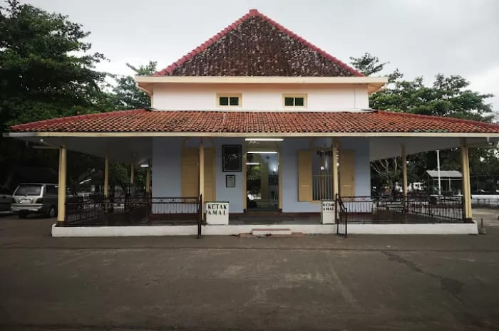

Tempat Wisata Religi Ternama

Masjid Agung Pekalongan
Ikon religi di Pekalongan yang penuh kedamaian dan sejarah Islam.

Makam Sapuoro
Tempat ziarah populer untuk mengenang salah satu ulama besar Pekalongan yang bernama Habib Ahmad bin Abdullah bin Abithalib Alathas
Makam Kayugeritan
Tempat ziarah populer untuk mengenang salah satu ulama di pekalongan yang bernama Habib Abu bakars